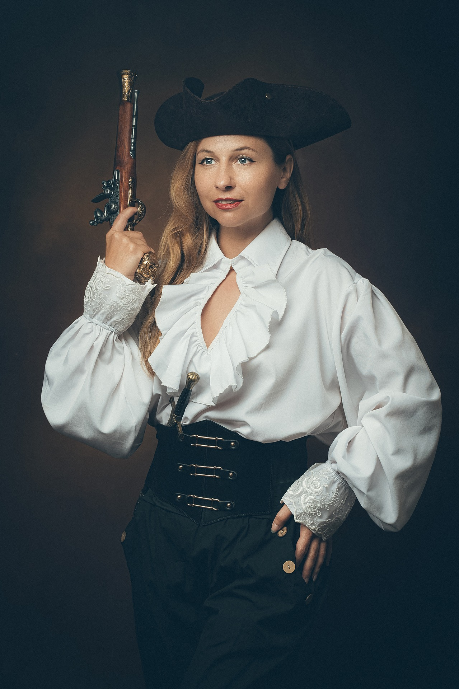

Costume Ideas
To view alternative options: Adjust the index page size!


Maybe Something For The Lovebirds!
Now this costume idea, is quick and painless, yet still effective!
To view alternative options: Adjust the index page size!
